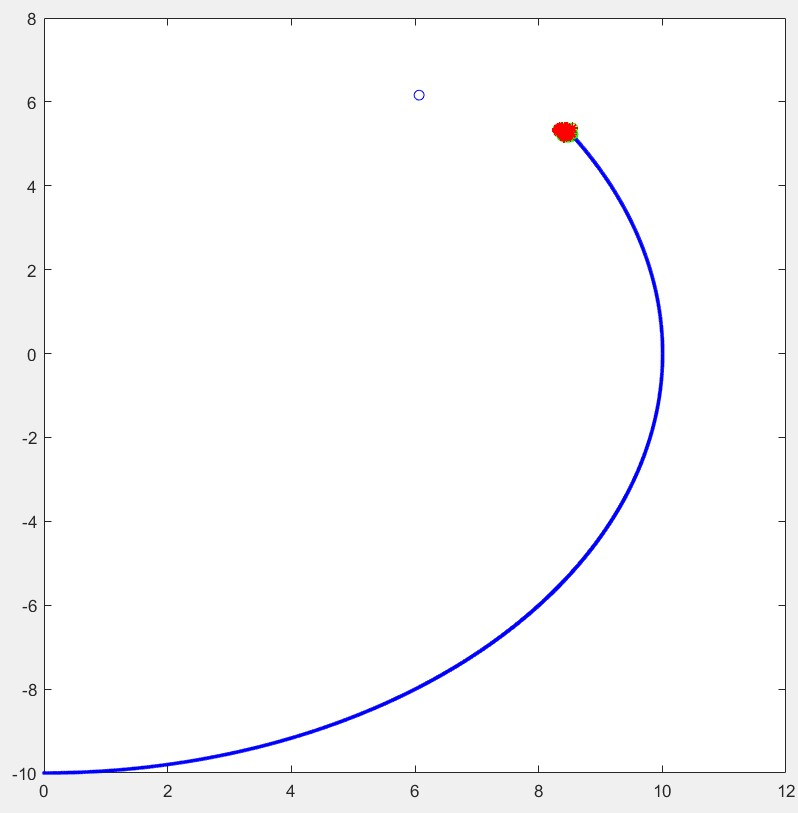

The Particle Filter Algorithm is a set of repeated Monte Carlo experiments that aim to identify the robot's position and orientation with respect to a known map and some landmarks (blue circles).
In the images above, the first image shows the initial state of the particles before any time propagation has occurred. The second image shows the end state when all particles generated have converged onto the robot's true position, with the robot's true trajectory shown in blue.
Software: Matlab
Conceptual: Bayesian Statistical Inference | Time Propagation